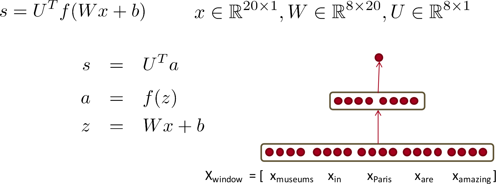
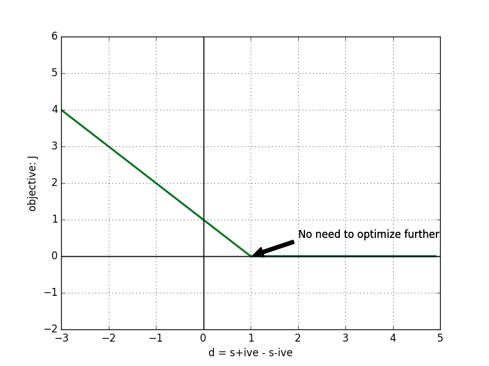
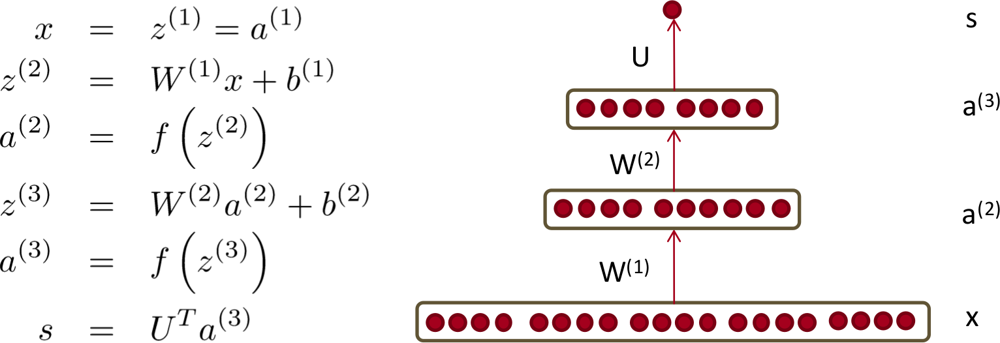
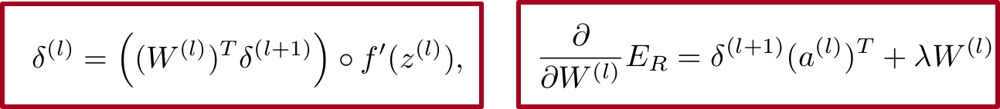

In this article, I am simply re-deriving the forward and backward propagation algorithm discussed in CS 224D lecture 5. Primary goal is self-clarification and self-enlightenment. Recall that, we were trying to find if the center word is a location or not. For this we give input to the neural netwrok as concatenated word vectors (including context), and calculate a score. If score is high enough, we say center word is indeed a location.
Thus our objective is to train this NN model to do this correctly. We assume that we have a tagged corpora. We can easily generate negative examples by choosing any non-example sentence or replacing the center word from the corpora, with a non-location word.
Forward and Backward propagation in Neural networks
Consider a single hidden layer neural network as shown in the figure below (taken form the slides of CS 224D course). The way to compute forward values is straightforward. Note that here f is the non-linear function, which could be sigmoid, or softmax or something similar.

Here, x is the input and there is no non-lineraity present at the final computation of output. The derivation is straight forward and need no explanation.
Deriving cost
Objective which neds to be minimized is:
J = max(0, 1 - s + s\(_c\))
where s is score for +ive class and s\(_c\) is score for negative class.
We are striving to achieve a model such that difference between score of positive and negative example is at least 1. It's best to visualize this.
Consider the difference d = s - s\(_c\)
This gives objective as: J = max(0, 1- d). It's plot:

Computing gradient
When value of our cost function is zero, the constant part, i.e., first argument to the max function (aka simply 0) is in play. Thus we do not need to consider any update in this case. We only need to update parameters when J > 0. In that case J = 1 - s + s\(_c\)
Since for both +ive and -ive examples the model is same, let's try to optimize positive part, and negative part would follow from that. we can visualize s as a fucntion of some parameter, given the input. i.e.,
$$\fbox{s = score($\Theta$|X)}$$
Here, $\Theta$ or parameters are: U, W, b
And Value of s = U\(^T\)a = U\(^T\) f(z) = U\(^T\) f(Wx + b)
Derivative wrt U
$\frac{ds}{dU} = \frac{dU^Ta}{dU} = a$. Thus
$\frac{ds}{dU} = a$
Derivative wrt W
$\frac{ds}{dW} = \frac{dU^Ta}{dW} = \frac{d(U^T f(Wx +b))}{dW} $
we can get to this derivation by computing derivative of s wrt w$_{i,j}$ (i.e., let's consider just one element of the matrix W)
Here f is an element wise operation. w$_{i,j}$ (help) computes, i$^{th}$ element of the hidden layer which multiplies with i$^{th}$ element (which could be row if there are more than one output) of U. So from U, only U$_i^{th}$ row is used. From W only i$^{th}$ row is used. and also bias term b$_i$ would be used in computing the i$^{th}$ element. Derivative of rest of the part of s would be zero. Thus we have:
$\frac{ds}{dw_{i,j}} = \frac{dU_{i,.}f(W_{i,.}x + b_{i})} {dw_{i,j}} = U_{i,.}f'(W_{i,.}x + b_{i}) \frac{dW_{i,}x} {dw_{i,j}}$
We can see that in the derivative part, only W$_{i,j}$x$_j$ would have non-zero derivative, which would be x$_j$. Thus we have:
$\frac{ds}{dw_{i,j}} = U_{i,.}f'(W_{i,.}x + b_{i}) x_j = U_{i,.}f'(z_i) x_j$
So far so good, but can we write it more compactly, in terms of complete matrices and derivative wrt complete W?
U and f' have element wise multiplication. Let us represent this by $\delta$, which would be element wise multiplication of vector U and vector f'(z).
$\delta$ = U $\omicron$ f '(z)
Which gives: $\frac{ds}{dw_{i,j}} = \delta_{i} x_{j}$
From this we can see that derivative wrt to all the elements of W could be expressed as:
$\frac{ds}{dw} = \delta x^T$
Derivative wrt b (bias weights)
$\frac{ds}{db} = \frac{dU^Ta}{db} = \frac{d(U^T f(Wx +b))}{db}$
Again like for W, we can do the calculation and can get derivative = $\delta$
$\frac{ds}{db} = \delta$
Please note, this can also be visualized as an extension of W (add one more column to it, where x is always 1). Then in formula of derivation wrt W, we can set x as 1 and can get the same result.
So this computes the derivative wrt to all parameters. All that we need, now is to use sgd and optimize the objective. But let's try to generalize it for n layer neural network. Let's take the case where there are two hidden layer. Agan image taken from slide of the course:

Here we have many more parameters, namely: U, W$^{(2)}$, W$^{(1)}$, b$^{(2)}$, b$^{(1)}$. With the help of the derivation done previously let's try to derive derivation wrt all the parameters here.
Derivative wrt U
$\frac{ds} {dU} = \frac{U^Ta^{(3)}}{dU} = a^{(3)}$
Derivative wrt W$^{(2)}$ and $b^{(2)}$
$\frac{ds}{dW^{(2)}} = \frac{U^Ta^{(3)}} {dW^{(2)}} = \frac{U^Tf(W^{(2)}a^{(2)} + b^{(2)}) } {dW^{(2)}} $
This looks a lot similar to what we derived in the previous section. If we omit the subscripts and replace a with x, ths is exactly same. Thus we can safely write:
$\frac{ds}{dW^{(2)}} = \delta (a^{(2)})^T$ But we need to find out what $\delta$ is. As it was element wise multiplication of U and f' previously, we can do the same here. But let's superscript it, as now it is for layer (3). This gives:
$\delta^{(3)} = U \omicron f'(z^{(3)})$
and
$\frac{ds}{dW^{(2)}} = \delta^{(3)} (a^{(2)})^T$
$\frac{ds}{db^{(2)}} = \delta^{(3)}$
Derivative wrt $W^{(1)}$ and $b^{(1)}$
s expanded so that it contains W$^{(1)}$ is: $U^T f( W^{(2)} f( W^{(1)}x + b^{(1)}) + b^{(2)})$
Here all the weights in W$^{(1)}$, would affect the output s, as it's output propagates through the next (final in this case) hidden layer.
Let's try to see the analogies from the previous layer. z$^{(3)}_{i}$ is exactly like s from previous single hidden layer NN. So we can get $\frac{dz^{(3)}_{i}}{dW^{(1)}}$ by following the previous section derivation. U from the previous section is row i of W$^{(2)}$ matrix.
Also we had: $\delta$ = U $\omicron$ f '(z)
and finally: $\frac{ds}{dw} = \delta x^T$
Thus, in this case we have
$\delta^{(2)}_k = W^{(2)}_{(k,.)} \omicron f'(z^{(2)})$
$\frac{dz^{(3)}_{k}}{dW^{(1)}} = \delta^{(2)}_k.x^T$
Writing s in terms of z$^{3}$ we get: s = $U^T f(z^{3})$
This gives: $\frac{ds} {dz^{3}} = U \omicron f ' (z^{3})$ Please note here,we are getting a vector and there is an element wise multiplication. Each component of the vector is derivative wrt respective z$^{(3)}$
This is $\delta^{3}$
$\delta^{(3)} = U \omicron f ' (z^{(3)}) = \frac{ds} {dz^{(3)}}$
Now, we can apply chain rule to get the derivative of s wrt W$^{(1)}$. First let's use a single component of $z^{(3)}$. This gives us:
$\frac{ds}{dW^{(1)}} = \frac{ds}{dz^{(3)}_k} \frac{dz^{(3)}_k}{dW^{1}} = \delta^{(3)}_k (\delta^{(2)}_k . x^T)$
Well to incorporate all the k's, I guess we need to add the derivative (all the values which k can take: |U|), as the change is happening via all the components of the z$^{(3)}$.
This gives us:
$\frac{ds}{dW^{(1)}} = \Sigma^{|U|}_{k=1} \delta^{(3)}_k (\delta^{(2)}_k . x^T)$
Now there are few ways to procceed from here:
-
Here first $\delta$ is a scalar, and second a vector!! So we can manipulate the brackets to get:
$\frac{ds}{dW^{(1)}} = \Sigma^{|U|}_{k=1} (\delta^{(3)}_k \delta^{(2)}_k ). x^T$
Let's define a new matrix $\Delta^{(2)}$, whose columns are $\delta^{(2)}_k$. Then we can write summation part as:
$\Sigma^{|U|}_{k=1} \delta^{(3)}_k \delta^{(2)}_k = \Delta^{(2)}.\delta^{(3)}$ (Each row of $\Delta$, multiplies to all values of $\delta$. Thus each column od $\Delta$ is, effectively, getting multiplies with each element of $\delta$ and then all such vectors are added (simple interpretation of Matrix and vector multiplication)). Let's define the vector so obtained as: $\delta^{(2)}$ (note there are no subscripts.)
Now we can compactly write: $\frac{ds}{dW^{(1)}} = \delta^{(2)}.x^T$ and $\frac{ds}{db^{(1)}} = \delta^{(2)}$
-
Alternatively, instead of defining $\Delta$, let's expand $\delta^{(2)}_{k}$, and put summation part, without x as $\delta^{(2)}$. we get:
$\delta^{2} = \Sigma^{|U|}_{k=1} \delta^{(3)}_k \delta^{(2)}_k = \Sigma^{|U|}_{k=1} \delta^{(3)}_k (W^{T(2)}_k \omicron f'(z^{(2)}))$ (Please note that we need to transpose W, as while calculating s, W is defined in such a way.)
Again reshuffling the parenthesis: $\delta^{2} = \Sigma^{|U|}_{k=1} (\delta^{(3)}_k W^{T(2)}_k) \omicron f'(z^{(2)}) = W^{T(2)}.\delta^{(3)} \omicron f'(z^{(2)})$
So the key takeaway is actually the generic formula which could be generalized above, and also there in Lecture 5, SLide 33
